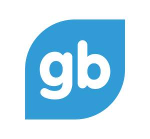
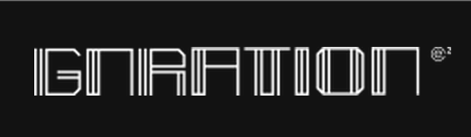
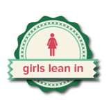
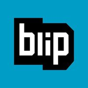
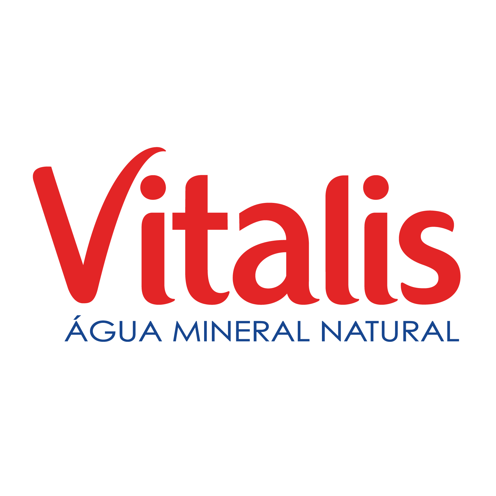
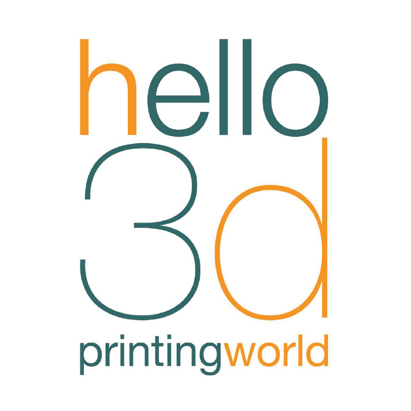
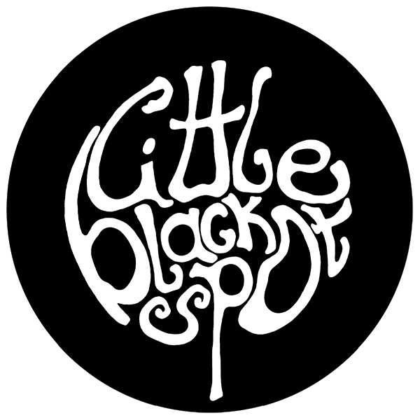
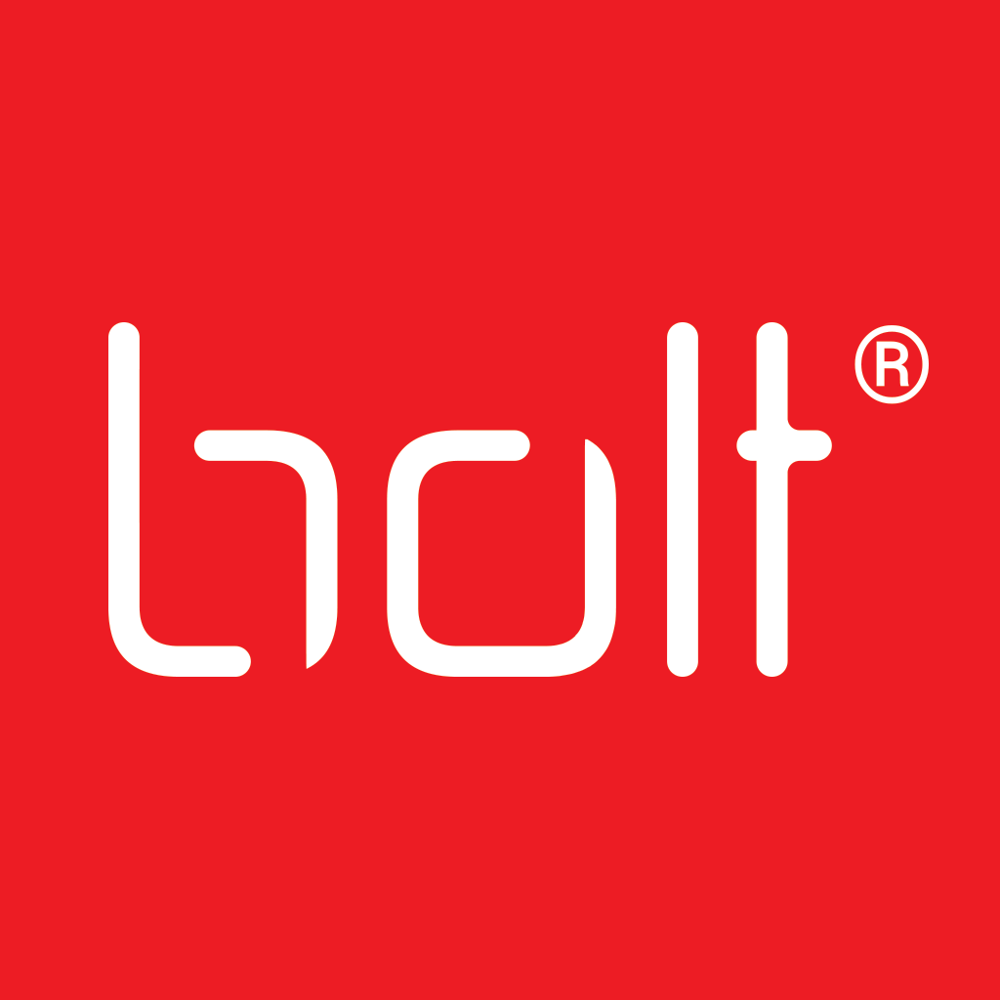
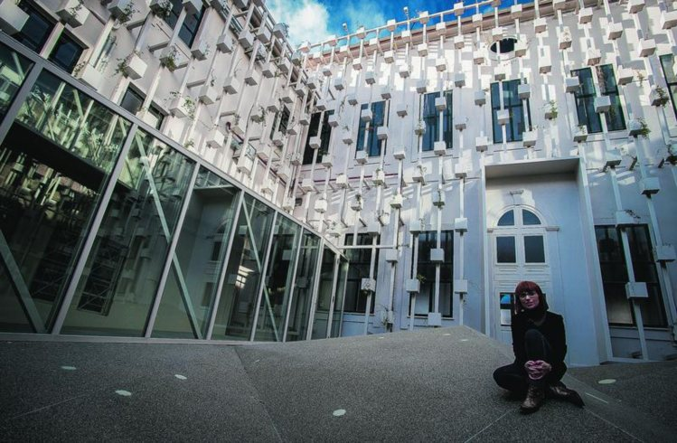

Olá Braga! Hello Braga!
O Rails Girls chegou a Braga! Gostavas de aprender a programar? Junta-te a nós neste workshop gratuito, onde irás aprender a desenvolver uma App em Ruby on Rails! Não precisas de saber programar.
Rails Girls just got to Braga! Join us in this free workshop where you will learn how to build an application in Ruby on Rails! No previous knowledge on programming needed.
The event is over and the applications are closed. Do you want to go to Rails Girls? Fill this questionnaire to say where you would like to have the next Rails Girls and we will keep you updated.
You learn designing, prototyping and coding with the help from our coaches.
You need your own laptop, curiosity and a sprinkle of imagination!
Want to help? We are looking for volunteers, partners, sponsors and Rails coaches. Email us.
| 09:00 - 09:45 |
Registration, breakfast and installation party!Meet & greet. Get to know the attendees a little bit before hand. Bring your laptop so we can help you install Ruby on Rails on your computer if you weren't able to do that before. |
|---|---|
| 10:00 - 10:15 |
WelcomeOutline of the day and schedule By Ana Sofia Pinho & Zamith |
| 10:00 - 10:30 |
WORKSHOPHTML and CSS intro By Ricardo Mendes |
| 10:30 - 11:15 |
Introduction to programming with rubyBy Zamith |
| 10:15 - 10:30 |
Coffee BreakHTML and CSS intro |
| 11:30 - 13:00 |
Rails Girls App TutorialLet's get coding! |
| 11:10 - 13:00 |
WORKSHOPJumpstart your first web application |
| 13:00 - 14:00 | Lunch |
| 14:00 - 14:15 |
LIGHTNING TALK |
| 14:15 - 16:30 |
Hands on the app. |
| 16:30 - 16:50 | Coffee break and lightning talk. |
| 16:50 - 19:00 |
Hands on the app. |
| 18h30 - 19:30 |
WORKSHOPBento Box: Recap of what we’ve learned and how it all fits together. |
| 20h00 - 22h00 |
Dinner and Drinks with Ruby ConfOpen for everyone, meet cool people interested in tech and prepare for RubyConf. |
Rails Girls Braga
12th October
It will take place at GNRation. To get there check below.
Applications
Closed
First round: 7th September to 3rd October
Second round: Sorry, it is closed due to long waiting list.
Acceptances informed during the following weeks.
Applications until the 29th May are valid to the second round.
If you were accepted to the event and are not able to go, send us an e-mail or fill this cancellation form.
Rails Girls Braga is co-organized with our awesome partners.
Want to help? We're looking for partners and sponsors for the event! Email us!

GROUP BUDDIES handcrafts web and mobile products in a lean and agile culture. They are organizing RubyConf in Braga!

GNRATION is a space to promote artistic activities and digital arts.

Girls Lean In is a community that aims to bring together the women entrepreneurs of Braga and the World.
Fy Factory is more than a cowork, it is a place where freelancers, startups and small companies gather and work together.

Women in Technology is the biggest professional and international organization dedicated to promote women in engineering and science.
ASAP54 is an iPhone app where you can follow friends and style muses to discover their fashion searches. Use the visual search tool to search items and sharing your top finds with your followers.
 Blip develops high performance web products with agile methodologies. They strive to make a difference in the web application world.

Vitalis is a light and pure mineral water, essential to life. Vitalis replenishes the balance of the body and well being.
 hello3d is a 3D Printing and Rapid Prototyping Portuguese company. 3D printers assembly with training. For those that are like this area, get in touch with the community open-source DIY 3D.
Kabisa is a dutch company that focusses on building high quality enterprise software. They are the market leader in Ruby On Rails consulting in the Netherlands and have been successfully introducing it to companies over the past 8 years, marrying it to agile methods and expert knowledge on enterprise integration and mobile technologies.
 LITTLE BLACK SPOT is an illustration project by artist and illustrator Raquel Costa, created with the intention of revealing the magic behind everyday life. Raquel Costa was born in Oporto, but lives and works in Braga. She has regular exhibitions, both in Portugal and abroad, and she also illustrates children’s books and record covers.
Gen design studio is a company dedicated to the development of graphic, product, environment and web design and illustration. Placing great emphasis on project methodologies, we see design as a corporative emancipation discipline. With this strategic design perspective in mind, we're constantly aware of the world around us, predicting future scenarios and programming lines of sustainable action.
Cristo Rei is a bakery and pasticery founded in 1980 in Guimarães. Since then, this bakery opened mores shops in other cities, like Braga, and offer a more variety of products such as take away foos and ice creams.
 Bolt is a marketing and advertising agency. Specialized in marketing, branding, design and print, Bolt adds innovation to your work.
Why can't I apply anymore? Rails Girls Organizers are very sorry, but due to the amount of people interested, we already have a long waiting line. Pease let us know that you are interested in the next Rails Girls and that you want us to let you know news about the next Rails Girls. Go to the link, fill THIS FORM and pick the cities you would like Rails Girls to go! You can also follow us on facebook and twitter. Thank you!
Is this going to be in english? Nope, most of the event and speaches are going to be done in Portuguese! The local coaches are native speakers. However, some of the inspirational talks as well as instructions might be in english. Email us
How much does the workshop cost? Nothing, it's free! You just need to be excited and prepared to learn a lot and work hard!
Who is this aimed for? Women of any age with basic knowledge of working with a computer. We’ve had people of all ages taking part. The event will be in Portuguese, but English translators will be available. Please bring your laptop.
Can men attend? Yes, but girls are given a priority.
I know how to program - How can I help? We’re also looking for people to be coaches. We’ll have a two-three hour workshop before the event to walk you through the curriculum. Email us
 Ana Sofia Pinho, organizer
@anasofiapinho
Catarina Campos, organizer
@catarina_caja
Catarina Sousa, organizer
Nadia Bischoff, organizer
Ana Sofia Pinho, organizer
@anasofiapinho
Catarina Campos, organizer
@catarina_caja
Catarina Sousa, organizer
Nadia Bischoff, organizer
 Roberto Machado, coach
@rmdgb
Luís Ferreira, coach and organizer
@zamith
Ricardo Mendes, coach
@locks
Rui Salgado, coach
@ruisalgado
Pascal Widdershoven, coach
@_pascalw
Filipe Pina, coach
@filipepina
Ivo Benedito, coach
@ivobenedito
Ismael Abreu, coach
@_ismaelga
Nuno Duarte, coach
@nunoavpduarte
Daniel Serrano, coach
@dnlserrano
João Fernandes, coach
Janko Marohnić, coach
@jankomarohnic
Bruno Sutic, coach
@brunosutic
Zoran Majstorovic, coach
@z0maj
Roberto Machado, coach
@rmdgb
Luís Ferreira, coach and organizer
@zamith
Ricardo Mendes, coach
@locks
Rui Salgado, coach
@ruisalgado
Pascal Widdershoven, coach
@_pascalw
Filipe Pina, coach
@filipepina
Ivo Benedito, coach
@ivobenedito
Ismael Abreu, coach
@_ismaelga
Nuno Duarte, coach
@nunoavpduarte
Daniel Serrano, coach
@dnlserrano
João Fernandes, coach
Janko Marohnić, coach
@jankomarohnic
Bruno Sutic, coach
@brunosutic
Zoran Majstorovic, coach
@z0maj
Rails Girls Braga is going to be at
GNRATION
Praça Conde de Agrolongo n° 123
4700-312 Braga
Here are the GPS coordinates 41.552952, -8.426235.
You can also check it on Google Maps.
Should you get lost or stuck, dial 00351 910 444 710. This should connect you to an organizer or coach that will try to help you get there.
